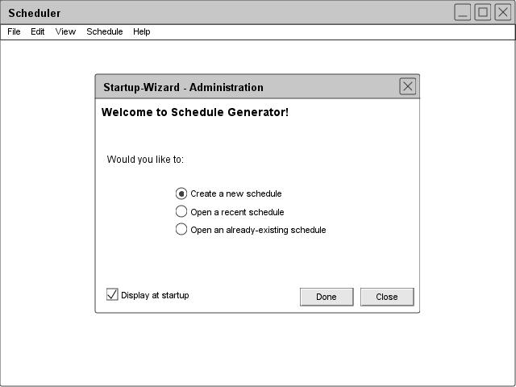
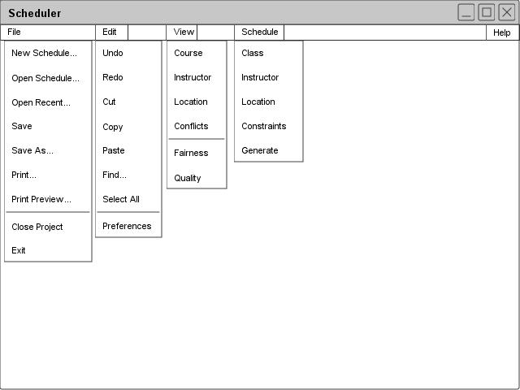

2.1.1: Administrative UI
When invoked by the scheduling administrator, the Scheduler Tool displays an initial screen, illustrated in Figure 1.

Figure 1: Admin splash screen
The user is presented with two windows: The primary work space window, with a menu bar across the top edge and the work space area left blank; a splash screen, listing several primary functions the scheduling administrator may select to quickly get to work. If the user chooses to bypass the splash screen by closing it, an work space remains within the primary window, at which point the user may use the top-most menu bar to direct his/her efforts. If the user wishes to not be presented with the splash screen at startup, he may uncheck the Display at startup dialogue at the bottom left corner of the splash screen.
Below, Figure 2 shows and explains an expansion of the top-level menu bar.

Figure 2: Admin UI overview
The File menu contains commands regarding the general management of the scheduler's files and projects. File-->New Project creates an empty schedule within the primary work space and prompts the user for baseline information to identify the project (name, for what quarter, etc.). File-->Open Project opens a display by which the user may select and open an already-created schedule project. File-->Recent opens a drop-down menu next to the Recent selection, listing several recently edited/opened schedule projects. File-->Save commits any changes made to a project and save them to the appropriate file name. File--> Save As... opens a display whereby the user may save their project under a name different than its current one. File-->Print opens a display whereby the user may selections option to print all or parts of a schedule project. File-->Print Preview opens a display which illustrates how the schedule would look if printed with the current printer settings. File-->Close Project closes the current schedule project, asking the user whether he/she wishes to save his/her current work. Scheduler remains open, with a blank work space. File-->Exit closes the Scheduler program, querying the user as to whether he/she wishes to save his/her work.
The Edit menu contains commands pertaining to some of the more basic tools of the scheduler program. Edit-->Undo undo's the most recent action on the schedule by the user. Edit-->Redo redo's the most recent action which had Edit-->Undo applied to it. Edit-->Cut takes the current, cursor-selected object and remove it, placing it in memory on a "clipboard". Edit-->Copy takes the current, cursor-selected object and copies it into memory on a "clipboard". Edit-->Paste takes the most recent addition to the clipboard (either by Edit-->Cut or Edit-->Paste and places it at the most appropriate place nearest the current position of the cursor (provided a Paste operation is currently allowed in a given setting. Edit-->Find opens a display whereby the user may search for a particular item with the schedule (professor name, raw text displayed in the schedule, a particular class, etc.). Edit-->Select All highlights all available objects in the area surrounding the cursor's current position, or around the window which currently has the "focus". Edit--Preferences opens a display whereby the user can configure the inner workings of the Scheduler Tool (general settings, font settings, default display settings, etc).
The View menu contains commands to reorganize how the current schedule-project is viewed. View-->Course, View-->Instructor, and View-->Room # reorganize the schedule's view to display it according to criteria to be specified in a subsequent window. . View-->Course reorganizes the schedule's representation to present the user with a schedule sorted according to a classes letter acronym (CPE, CSC, SE, etc.) and corresponding numerical identifier (101, 102...308, 415, etc.). View-->Instructor reorganizes the schedule's representation to present the user with a schedule sorted according to professor's names. View-->Room # reorganizes the schedule's representation to present the user with a schedule sorted according to which rooms various classes are held in. View-->Conflicts reorganizes the schedule's representation to present the user with an illustration of which shifts are in conflict with one another (i.e. an instructor is scheduled to teach two classes at the same time, or a room has been assigned for two different classes at the same time).
The Schedule menu contains commands which pertain primarily to the administration of the Scheduler's database of information. Within the Schedule-->[Class/Instructor/Room] menus, a user may add, edit, or remove information regarding new or already-existing classes, instructors, or rooms (respectively). Here, it should be noted that any changes made apply to a "working copy" of the original data: that is, the data changed in one schedule does not implicitly propogate into others. Schedule-->Constraints opens a display whereby the user may create, edit, delete, and prioritize the rules by which a generated schedule should (but might not) adhere. Schedule-->Modify Schedule opens a display whereby a user may freely modify all aspects of a given schedule project (times slots, professor-class assignments, room-class assignments, professor time preferences, etc.). Schedule-->Fix Conflicts reorganizes the schedule to display a representation of shifts which conflict, and allow a user to reorganize/change any/all attributes in order to resolve these issues. Schedule-->Generate opens a display whereby a user may specify any of several of the following sample options: Which classes should be included/excluded (all?), which professors should be included/excluded (all?), which constraints should be factored in/out (all?), etc.
prev: ui-overview | next: ui-instructor | up: functional requirements | index